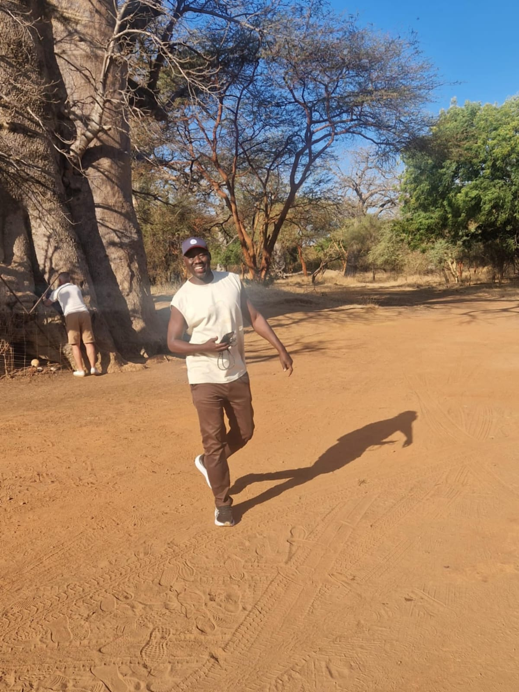

Guide local professionnel
Excursions authentiques & circuits sur mesure
avec un guide certifié depuis Mbour et Somone
Clients satisfaits
Destinations
Ans d'expérience
Avis positifs
Découvrez la richesse culturelle et naturelle du Sénégal à travers nos excursions soigneusement sélectionnées
Plongez dans l'histoire entre mémoire, culture et patrimoine vivant.
En savoir plus →Vivez une scène authentique du quotidien sénégalais entre mer et traditions.
En savoir plus →Découvrez l'ancienne capitale du Sénégal, classée UNESCO, entre architecture et culture.
En savoir plus →
Guide certifié
KALIDOU KANDJIFondée par KALIDOU KANDJI, guide touristique professionnel agréé par l'État sénégalais, Teranga Voyages est une agence locale spécialisée dans les excursions et circuits touristiques à travers tout le Sénégal.
Grâce à notre parfaite connaissance du terrain, de la culture et des traditions locales, nous vous proposons des excursions bien organisées, conviviales et adaptées à tous : familles, couples, groupes ou voyageurs solo.
Trouvé via son site, il y a plusieurs mois, j'ai organisé pour un groupe de 15 amis plus d'une semaine d'excursions grace à son aide. Tout a été parfait. Ravis autant par ses qualités humaines que par ses qualités de guide ainsi que de ses connaissances de ce magnifique pays qu'est le Sénégal. Cela fait toujours peur de faire une avance, surtout pour des montants assez importants, à quelqu'un qu'on ne connait pas à des milliers de kilomètres, mais là, vous pouvez y aller les yeux fermés. Merci Kali
Un grand merci à kali et à son équipe (Bacary, Félix le chauffeur et bien d’autres) pour nous avoir fait découvrir le Sénégal . Nous avons eu la chance d’être en petit comité de 4 et 5 personnes ( voitures très confortables). Nous avons passé de très bons moments en leurs compagnies et nous avons visité de très beaux endroits . ( île aux coquillages , réserve de Bandia, baobab sacré , île de Gorée , Dakar, et le lac rose où nous avons fait un mini rallye dans les dunes et le long de la plage ). Souvenir inoubliable. Encore merci
Kali nous a été recommandé par notre agent de voyage. Nous sommes ravis des excursions faites avec lui et son équipe. Les excursions sont encadrées par un duo guide + chauffeur. Félix est très bon conducteur, prudent et sympa. Kali avec qui nous avons fait 3 excursions et Sakari une excursion sont pro, compétents, attentionnés et très sympas. Les prix sont très corrects. Nous comptons retourner au Sénégal dès que possible et nous referons appel sans hésiter à Kali pour nos excursions.
Un immense merci à Kali de Kali Excursions pour avoir rendu notre séjour au Sénégal (du 7 au 16 août) aussi riche et mémorable ! Nous étions en famille, et grâce à lui, nous avons découvert des lieux magnifiques, tout en nous sentant accompagnés avec gentillesse, professionnalisme et bienveillance. Kali a su s’adapter à notre rythme et créer une ambiance chaleureuse tout au long du voyage. Une très belle rencontre humaine que nous n’oublierons pas !
Je tenais à remercier Kalidou pour cette magnifique semaine passée au Sénégal à tes côtés. Tu es bien plus qu’un guide : tu es un homme profondément bon, avec de vraies valeurs, toujours prêt à tout pour faire de notre voyage une réussite. Les enfants et moi-même avons appris énormément de choses et fait de magnifiques découvertes sur notre pays. Nous n’avons qu’une seule envie : revenir ! Merci pour tout, Kalidou. Comme le disent mes enfants : « Tonton Kalidou, c’est le meilleur ! » À toutes les familles, je vous le recommande à 10 000 % 🤲🏿✨